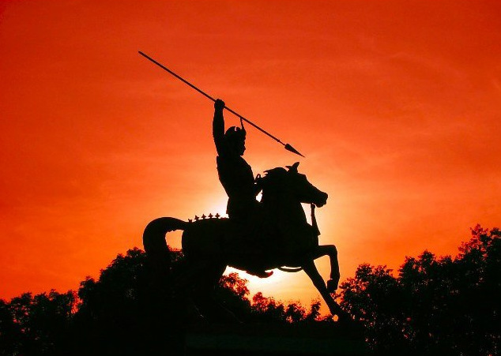

History of Pune. ...
In the 18th century, Pune became the political centre of the Indian subcontinent, as the seat of the Peshwas,
who were the prime ministers of the Maratha Empire. After the fall of Peshwa rule in 1818,
the new British rulers made the city one of their major military bases. the city was confined to the eastern bank of the Mutha river.
Since then, the city has grown on both sides of the river. In the 19th and early 20th century,
Pune was considered by the British as the center of political unrest against their rule.
The post-independence era saw Pune area emerging as a major manufacturing center. The city has also seen further growth in the higher education sector during this period.
